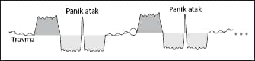
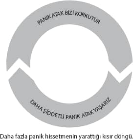

Panik atak
Ülkemizde belki de ilk kez 20 sene önce telaffuz edilmeye başlanan panik atak rahatsızlığı son yıllarda gündemimizi fazlasıyla meşgul ediyor. Panik atağı temizleyebilmenin en önemli yolu, neden oluştuğunu belirleyebilmek.

Panik atak genelde, atakların ilk başlama tarihinden 1 sene öncesine kadar yaşanılan kötü bir olayla ilgilidir. Aslında panik atak yine bir iyileşme krizi. Kronik sorunları anlatmada kullandığımız grafikte olduğu gibi, yaşanan ana travma beyinde canlı olarak kaldığı için, farklı zamanlarda tetiklenerek, bizi sürekli aynı döngünün içine sokup duruyor. Biz bu programın iyileşme krizini, panik atak olarak yaşıyoruz.
Panik atağı temizleyebilmenin ilk şartı, beynimizde bu programı başlatan ana travmayı tespit ederek, bu olayı Hikâye Tekniğiyle tamamıyla temizlemek.
Erken yaşta başlayan şiddetli panik atak sorunu olan kişilerin önemli bölümünde, yıllar önce yaşanan bir “nefessiz kalma” vakası olabiliyor. Mesela, küçük yaşta midenin yıkanması, yüzerken boğulma tehlikesi geçirilmesi gibi durumlar bahsettiğimiz programı başlatabilir.
Eğer böyle bir durum mevcut değilse, bir yakının kaybıyla yaşanan travma, özellikle de cenazeye gidilmesi durumunda “klostrofobi” ve panik atak başlatabiliyor. Evet bunu çok açık söylemek istemesem de, bazen fazla “empati” yapabiliyoruz.
Panik atağın formatlanmasında beynin “nefes alma” ya da “kalp atışlarına” olan duyarlılığının temizlenmesi oldukça önemli. Zira panik başlayınca daha da fazla panikliyor olmak ve bunu istemdışı yaşamak, yaşanılan korkunun boyutunu kontrol edilemeyecek bir duruma getiriyor.

Çoğu zaman panik atağın etkilerinin azaltılması için NeuroFormat® Nefes Tekniği adını verdiğim, yaklaşık yarım saatlik bir uygulamayla bilinçaltının nefes alamama korkusu temizlenebiliyor. Özellikle, bu konuun yetkili bir profesyonel tarafından uygulanması gerektiği için NeuroFormat® Nefes Tekniği’nin uygulama detaylarını bu kitapta paylaşmıyorum.
Bu arada NeuroFormat® Nefes Tekniği’nin sporcularda uygulanması da, dayanıklılık kazanılması açısından çok başarılı sonuçlar veriyor.
Şimdi diğer en “popüler” durumu açıklayalım.